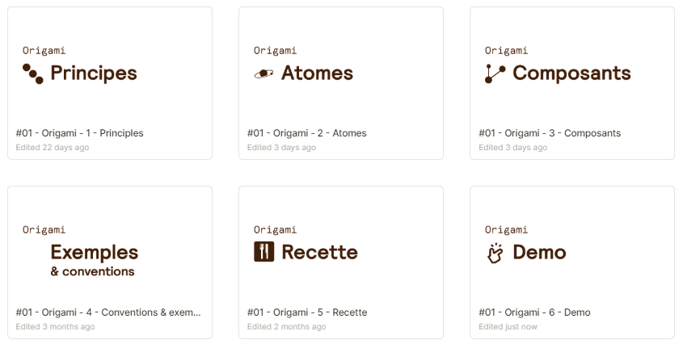
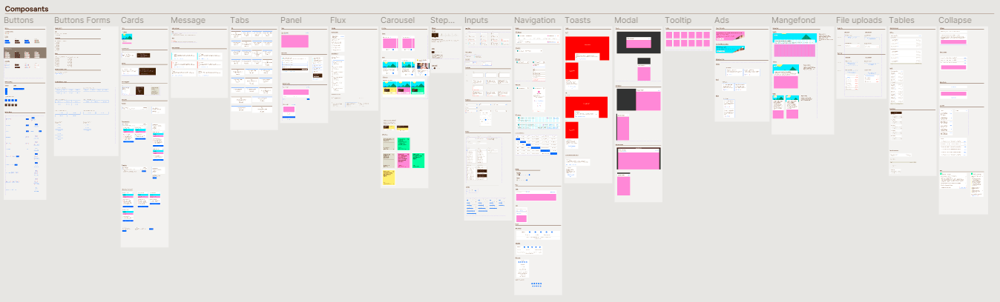
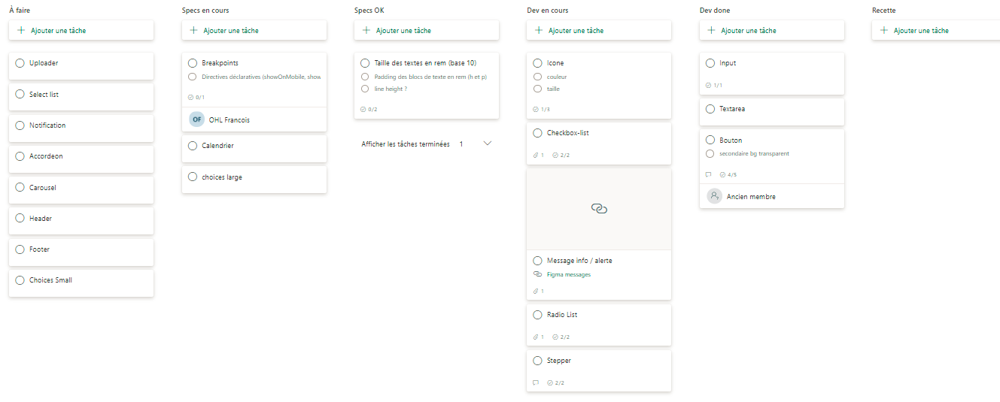
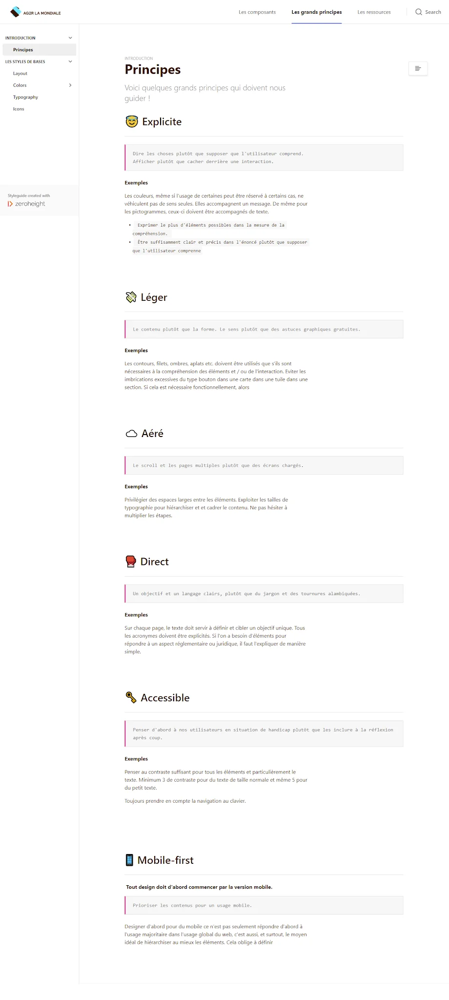
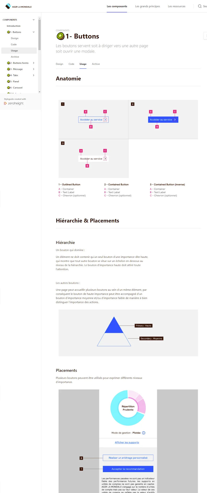

Origami — Industrialisation du design system
Les 4 étapes du déploiement
Premier initiateur du sujet au sein du groupe, j'ai structuré l'argumentaire économique avec le Tech Lead : chiffrage du coût des redéveloppements récurrents et gains d'échelle sur les parcours clients. Cette démarche chiffrée a permis de convaincre le management et d'obtenir le budget pour lancer une équipe dédiée.
Conception d'un système complet de plus de 50 composants modulaires intégrant typographies, grilles, variantes et états interactifs. Ce socle a permis d'absorber les évolutions de l'identité visuelle de la marque tout en sécurisant la cohérence graphique entre les différents espaces clients.
Architecture des composants : Organisation des librairies Figma, des principes fondamentaux aux composants modulaires prêts pour la production.


Rôle de Product Owner conjoint aux côtés du Lead Dev au sein d'une micro-équipe agile dédiée : priorisation du backlog, spécifications et livraison des composants de base sur un cycle initial de 8 semaines. Le développement a ensuite été étendu aux équipes produit sous gouvernance design.
Pilotage des sprints et backlog : Tableau Kanban dédié pour prioriser les spécifications design et coordonner les livraisons techniques front-end.

En parallèle, déploiement d'une documentation vivante sur Zeroheight pour consigner les règles d'usage, principes d'accessibilité et comportements interactifs. Résultats : réduction des allers-retours récurrents entre design et dev, meilleur respect des contraintes de marque et accélération nette de l'onboarding des nouvelles recrues en design dans l'équipe.
Principes directeurs et règles d'usage : Documentation vivante Zeroheight centralisant les principes de conception et les règles d'intégration des composants.


Analyse rétrospective
Retour sur le déploiement du Design System Origami tout au long de son cycle de vie.
Ce qui a fonctionné
- Commencer avec de petits tokens de base hautement réutilisables.
- Ajouter progressivement des mises en page complexes à mesure que les équipes gagnaient en maturité.
Axes d'amélioration
- Impliquer l'équipe communication & marque dès le cadrage initial pour anticiper les conflits sur les éléments d'identité graphique.
- Mettre en place un modèle de contribution plus ouvert pour les autres équipes de développement.